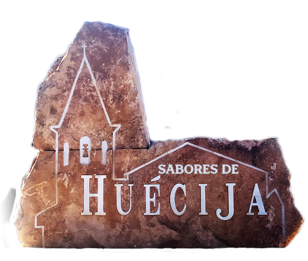

Estamos trabajando en la mejora de nuestro sitio web. En breve dispondremos de nuevos productos y contenidos. Disculpen las molestias.
«Creemos en trabajar por un mundo digno y justo, en el que la globalización suponga una oportunidad y no una amenaza.»
- Nacemos bajo la filosofía de ofrecer al consumidor un producto de calidad, elaborados con materia prima ecológica. Queremos contribuir con la producción de alimentos sanos, que promueva el bienestar de las personas y cuya producción apoye la expansión de la agricultura ecológica y de esta forma se genere un valor añadido en favor de todos los eslabones de la cadena de los productos, desde el campo hasta la mesa.
- El objetivo es alcanzar una “calidad selecta de los productos”, utilizando materia prima con una calidad biológica insuperable, resaltando su sabor, proporcionando salud, nutrición y bienestar a través de una alimentación natural de la más alta calidad.
- Nos basamos para nuestras elaboraciones en recetas tradicionales de nuestros antepasados, dándoles un toque de innovación e investigación introduciendo otros productos sustitutivos ( azúcar de abedul, eritritol), y aprovechar el poder de otros ( aloe vera, semillas de chía, jengibre…)